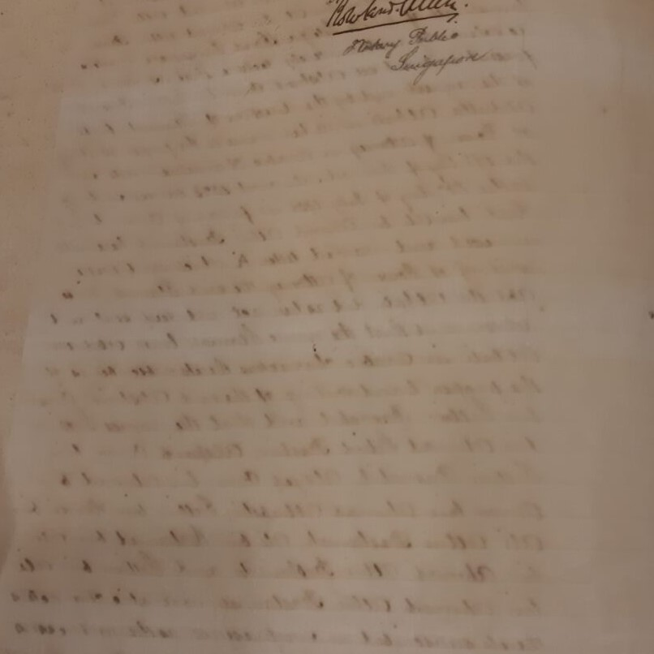

Showthrough or Bleed-through

Bleed-through of the ink from reverse of page
Description
The visibility of printing or inks on the other side of the surface. This can often be seen on various substrates with soluble media such as ink or paint then exposed to water, solvents or high humidity levels. Bleeding media may transfer media to other portions of the substrate or onto surrounding materials.
Treatment Notes
- If the iron gall ink is corroding through the paper, reinforce with thin Japanese paper for ease of handling.
- Control temperature and humidity to slow down the bleed-through
Materials Affected
Paper, Books